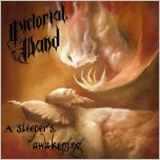

| Artist: | Pictorial Wand |
| Title: | A Sleeper's Awakening |
| Label: | Unicorn UNCR-5027 |
| Length(s): | 60/52 minutes |
| Year(s) of release: | 2006 |
| Month of review: | [07/2008] |
| 1) | Prologue | |
| 2) | The King And His Land pt I | |
| 3) | The Gates Of Lost Souls | |
| 4) | Pride - The Path Of Thorns | |
| 5) | Envy pt I - In Shadow | |
| 6) | Envy pt II - Broken Glass | |
| 7) | Wrath pt I - A Wandering In The Dark | |
| 8) | Wrath pt II - The Beast Within | |
| 9) | Gluttony - Corrosion Of Flesh |
disc 2
| 1) | Sloth pt I - Retrospective Visions | |
| 2) | Sloth pt II - Red Sunset & A Drowning Fly | |
| 3) | Greed pt I - The Golden Path | |
| 4) | Greed pt II - A Warning Not Heard | |
| 5) | Lust pt I - The Temptness Of Unchastity | |
| 6) | Lust pt II - A Sleeper's Awakening | |
| 7) | The King And His Land pt II - Pensiveness |
Frankly I hadn't the faintest idea who Mattis Sorum was, and this album's bio doesn't help in solving the problem. Apparently this two disc album is the debut of this one man band. A score of artists was employed for this project, none of whom known. So, clearly you do not need a score of well known people and big names to come up with a result.
The music is one flow and pretty ably manages to avoid the pitfalls on the path of a concept album, producing a varied sound, a melodic flow, never stinted by story taking presedence over music. There are sections dominated by vocals, sections dominated by keys and sections dominated by guitars. Even though minor influences of other artists are audible at times (heard a bit of Yngwie, for instance), these are sparse and, well, minor. The size of the group of musicians might have assisted on this part.